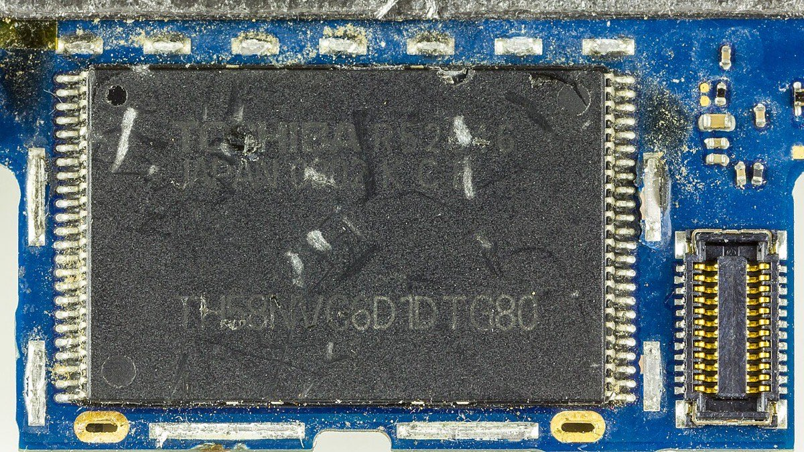
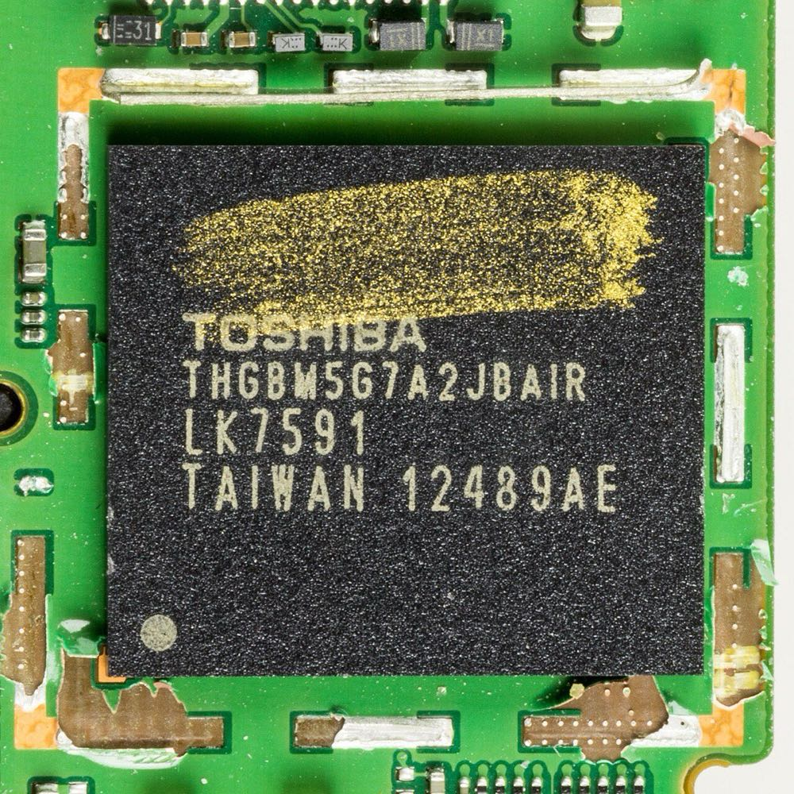
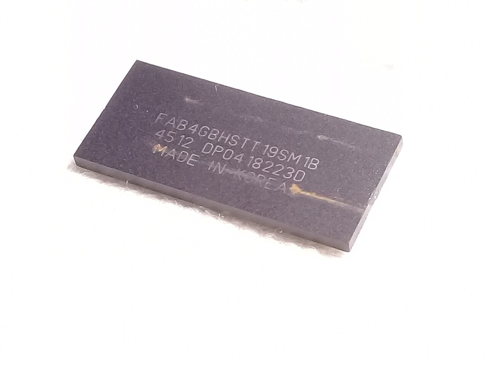
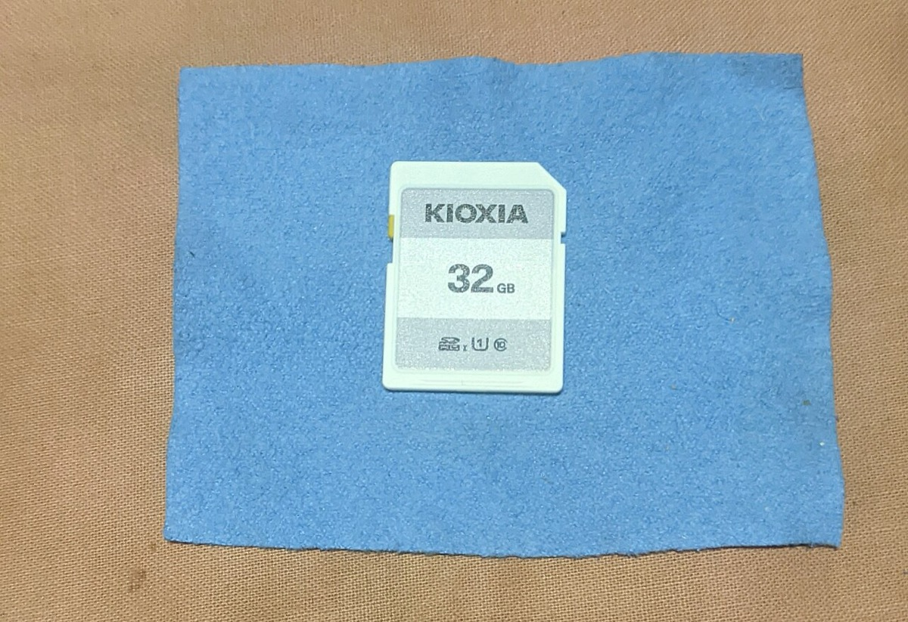
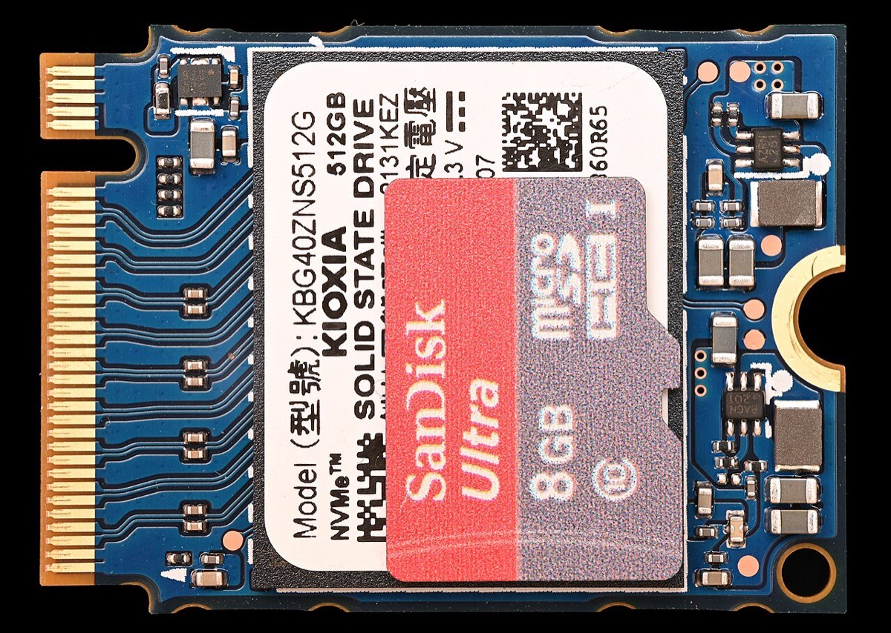

home / people / 舛岡富士雄
舛岡富士雄 — NOR/NANDフラッシュメモリと職務発明の制度
Fujio Masuoka 1943.5.8 – ／東北大学名誉教授・Unisantis Electronics 共同創業者・顧問
フラッシュメモリ NAND 東芝
職務発明 特許法35条 SGT
1943年5月8日、群馬県高崎市生まれ。1984年にNOR型、1987年にNAND型フラッシュメモリをIEDMで発表した。本ページの軸は舛岡本人の行動である。第一に、2004年の提訴が求めた対価帯と2006年の和解確定額の差。第二に、1994年に退職した舛岡が、2018年の事業譲渡の時点で株主の側にいなかったこと。譲渡直前の東芝メモリ株式は東芝が100%を保有し、譲渡価格約2兆3億円は東芝が受領した。実施権契約の有無と年次の売上・配当は判定不能とする。算定式の中身と退職主因の寄与も、一次資料が足りない範囲で判定不能とする。
再作成日 2026年11月11日。数値の基準日は同日。存命の科学者であるため、出典のない私生活・人物評は書かない。年表の満年齢は生年月日1943年5月8日からの年差で算出する。特許は出願日・公開日・登録日を区別する。請求額は報道間で10億円と11億100万円が並ぶ（諸説）。Japan Prizeの受賞記録は確認できず、本ページには書かない。
① 先に結論Verdict First
譲渡後の東芝議決権
約40.2%2018.6.1・再出資後
先に結論を置く。
1. 提訴が求めた対価帯は、和解確定額に収束しなかった。 2004年3月2日、舛岡は東京地裁に提訴した。ITmediaは一部請求を10億円、日経クロステックは相当対価の主張を80億円・一部請求を11億100万円と書く（報道・諸説）。2006年7月27日、東芝は公式プレスで和解金8700万円を発表した。対象は在職中の全職務発明とノウハウである。東芝は「当社の職務発明対価に関する考え方を相当程度考慮した」と書いた。支持の範囲は、本人の請求行動と確定額の差までである。算定式が市場規模と非連動だったかの証明は、裁判所内訳と当時規程が非公開のため判定不能とし、主張の範囲から外す6 26 7
2. 退職した発明者は、事業価値の実現時に株主の側にいなかった。 1994年、舛岡は東芝を退職し東北大学教授に就任した。LECインタビュー（2004年）で本人は次のように述べた。技監への内示は研究費も部下も付かないポストであり、研究継続が認められなかった（本人証言・single-source）。退職の主因は、東芝側の記録が無いため判定不能とする。2018年6月1日、東芝は東芝メモリの全株式を株式会社Pangeaへ譲渡した。東芝IRは、譲渡前の所有株式を3,000株・所有割合100%と記載する。譲渡価格約2兆3億円は、全額が東芝の受領である。舛岡個人の確定受取は和解金8700万円であり、譲渡価格の約2万3000分の1である。判定は支持である。東芝は譲受会社へ3505億円を再出資し、議決権約40.2%を取得した。このため「東芝が単独で事業体を保持し続けた」は棄却する。実施権契約の有無と年次のキャッシュフローの帰属は判定不能とし、主張の範囲から外す12 10 7
主張
読者と判断： 職務発明者が提訴で得た確定額と雇用主が事業譲渡で得た対価の差を前提に、読者は判断できる。判断の対象は、発明者が対価を事後の訴訟で求めるか、在職中に持分や契約で先に確保するかである。算定式の中身と年次の売上・配当は断定しない。退職主因の寄与も、一次資料が足りない範囲で断定しない。
主張： 舛岡が2004年に提訴して求めた相当対価（報道で80億円帯／一部請求約10〜11億円）は、2006年の和解確定額8700万円に収束しなかった。提訴という行動の金銭結果は、請求側が主張した対価帯より1桁以上小さい額で確定した。反証条件： 和解額が請求側の対価主張（80億円帯）に収束した公開記録がある。または裁判所が当該メモリの年次売上や事業譲渡額の一定割合として8700万円を算定した公開記録がある。判定： 支持（請求帯と確定額の差は東芝公式と複数報道で固定できる）。算定式が市場非連動だったかは、裁判所内訳と当時規程が非公開のため判定不能とし、主張の範囲から外す。主張： 1994年に東芝を退職した舛岡は、ナンド型フラッシュ事業の株主にならないまま事業価値の実現時点を迎えた。2018年6月1日の東芝メモリ株式譲渡の直前、同社株式は東芝が100%（3,000株）を保有していた。このため譲渡価格約2兆3億円は全額が東芝の受領となり、舛岡個人の確定受取（和解金8700万円）は譲渡価格の約2万3000分の1にとどまった。反証条件： 譲渡前の東芝メモリ株主に東芝以外の者（舛岡個人またはUnisantisを含む）がいた一次記録がある。または譲渡対価の一部が発明者個人へ支払われた一次記録がある。判定： 支持（東芝IRが譲渡前の所有割合100%と譲渡価格を記載する）。東芝は譲受会社へ3505億円を再出資し議決権約40.2%を得たため、「東芝が単独で事業体を保持し続けた」は棄却する。ナンド型フラッシュの実施権の契約が発明者側にあったかは、契約の不存在を公開資料で立証できないため判定不能とする。年次のキャッシュフローの帰属も、年次財務が無いため判定不能とする。いずれも主張の範囲から外す。主張： 舛岡の1994年の退職は、研究費と部下が付かない技監ポストの内示によって研究継続が認められなかったことが主因である。反証条件： 東芝の人事記録や退職時の合意文書が、別の主因（処遇・報酬・本人の転身計画など）を記録している。判定： 判定不能（根拠は本人証言のLECインタビューと武田科学振興財団の要約だけである。判定には東芝の人事通知か退職時の合意文書が必要である）。主張2の判定はこの主張に依存しない。
分解： 物理的制約はセル面積と消去単位。お金の流れは製品売上・特許実施料・職務発明対価・事業譲渡対価と再出資。利得の帰属は発明者・雇用主・譲受会社・後続のメモリ専業会社。法と強制力は特許法35条（当時）と社内規程・和解勧告・株式譲渡契約。時間は発明から量産までの年数と、退職から提訴・事業譲渡までの年数である。
② 舛岡の公開時系列Public Chronology 日付が一次情報または日付付き報道で確定した出来事だけを並べた。各項目は事実、具体、なぜ効いたかの3層である。期のボタンで絞り込める。日付の右は、その時点の満年齢である。
該当する項目がない。
年表の出来事のうち、NANDの量産と事業の名称変更は実物で確認できる。下の写真は、舛岡の退職後に東芝とキオクシアが販売したNAND製品である。



東芝製のNANDフラッシュ部品3点。左はiPhone 3G分解写真のToshiba TH58NVG6D1DTG80（8GB NAND flash）。中央はNexus 4基板上のToshiba THGBM5G7A2JBAIR（MLC NAND Flash、e-MMC）。右はUSBメモリ内部のNANDチップで、Commonsの説明はChipGeniusによる東芝製の判定と日付コード4512を記す。1991年の4Mbit製品化のあとも、東芝は社内事業としてNANDを量産した。舛岡は1994年に退職しており、これらの部品はいずれも退職後の製品である。写真：Raimond Spekking ／CC BY-SA 4.0、Raimond Spekking ／CC BY-SA 4.0、Pancho507 ／CC BY-SA 4.0／Wikimedia Commons


左はキオクシアのSDHC 32GBカード。右はKioxia/Toshiba BG4系列の512GB M.2 2230 SSDで、比較用にSanDisk製microSDカードが並ぶ。東芝メモリは2019年10月1日にキオクシアへ社名を変更した。東芝のNAND事業は、分社と2018年の株式譲渡を経て、この名称で製品を販売している。写真：Mr.ちゅらさん ／CC BY-SA 4.0、Phiarc ／CC BY-SA 4.0／Wikimedia Commons
③ 主張1の検証 — 提訴と和解額の乖離Lawsuit Claim vs Settlement 前提の発明だけ短く置く。1966年に東北大学工学部電子工学科を卒業し、1971年に工学博士を取得して東京芝浦電気（のちの東芝）総合研究所に入社した。米国特許US 4,437,174の日本優先日は1981年1月19日、登録は1984年3月13日。1984年12月のIEDMでMasuokaらがNOR型を発表し、1987年のIEDMでNAND構造セル（セル面積6.43μm²）を発表した。東芝の4Mbit NAND製品化は1991年である1 3 5 24
2004年3月2日、舛岡は東京地裁に提訴した。ITmediaの整理は次のとおりである。東芝の利益を少なくとも200億円とし、貢献度20%で対価40億円、その一部として10億円を請求した。日経クロステックは、相当対価の主張を80億円、一部請求を11億100万円と書く。請求側の数字は報道間で割れる（諸説・報道）。LECインタビューで本人は、提訴の主眼を評価と制度の問題提起に置く。請求額そのものは訴状側の金額である6 26 12
2006年7月27日、東芝は公式プレスで和解を発表した。和解金8700万円。対象は在職中の全職務発明である。東芝は「裁判所の和解勧告が当社主張及び当社の職務発明対価に関する考え方を相当程度考慮した」と書いた。毎日新聞（2006年7月28日、kantsuu転載）は相場観を「1億円前後」と整理する。同記事は、明確な算定方式はない、とも書く（報道）。中村修二・日亜化学の和解は2005年1月11日で合計8億4391万円である。舛岡事件の裁判所計算書は公開されていない（非公開）7 41 8
提訴側の対価帯と確定和解額
単位は億円。定義が異なる金額を同じ棒に載せないため、別系列で示す
8700万円＝0.87億円。請求側の80億円は報道上の主張額であり、確定額ではない。
判定は支持 である。支持の内容は「舛岡の提訴が求めた対価帯と、和解確定額8700万円の差が公開資料で固定できる」ことまでである。算定式が市場規模と非連動だったかの命題は、裁判所内訳と当時規程が非公開のため判定不能とする。連動していたかの命題も同様である。いずれも主張1の範囲から外す。法枠の側も、売上連動の法定算式を置いていない。2004年改正特許法35条は契約・勤務規則の対価定めを尊重する手続を置き、2015年改正は「相当の利益」への用語変更を入れた。これは連動式が条文に無いことの確認に留める43 44
④ 主張2の検証 — 退職後の株主構成と2018年譲渡対価の受領主体Exit, Shareholding, and Transfer Proceeds 1994年、舛岡は東芝を退職し東北大学教授に就任した。LECインタビュー（2004年）は本人の発言を載せる。技監への内示は研究費も部下も付けないポストであり、研究継続が認められなかった、という内容である（本人証言・single-source）。武田科学振興財団の要約は、退職時肩書きを「東芝研究開発センターULSI研究所第三研究所長」と記す。本人は「研究ができる環境さえ用意してもらえれば、東芝を動きませんでした」と述べた12 18
2004年にUnisantis Electronicsを設立し、1988年提案のSGTの事業化を続ける。SGTの量産標準への定着は公開一次では確認できない。Unisantisの公開資料はSGT事業を記載し、NAND事業の持分や実施権には触れていない13
2017年9月28日、東芝は東芝メモリの株式譲渡契約を締結した。東芝IRは、譲渡前の東芝メモリの大株主を「株式会社東芝 100%」と記載し、譲渡前の所有株式を3,000株（所有割合100%）と記載する。2018年6月1日に譲渡が完了し、譲渡価格は約2兆3億円（2.0003兆円）である。譲受会社は株式会社Pangeaである。東芝は譲渡完了に先立ち、東芝メモリから特別配当約1180億円を受けた。同時に東芝は譲受会社へ合計3505億円を再出資し、議決権のある普通株式約1096億円分（発行済普通株式の約40.2%）と転換権付き優先株式約2409億円分を取得した。議決権ベースの持株比率は次のとおりである。BCPE Pangea Cayman, L.P. 49.9%。東芝40.2%。HOYA 9.9%。東芝メモリ（のちキオクシア）は東芝の連結対象から外れ、持分法適用会社となった。東芝の東芝メモリ株式の直接保有は譲渡後0株である。譲渡前の株主が東芝1社であるため、譲渡対価の受領者も東芝1社である。売上高・営業利益・配当の年次推移は本稿では示さない。キャッシュフローの帰属は判定不能とする9 10 28
和解確定額8700万円（0.87億円）と、東芝が受領した譲渡完了価格約2兆3億円（20,003億円）の比は約1/23000である（0.87÷20,003）。この比は対価受領主体の差の参照であり、売上連動やキャッシュフローの証明には使わない。再出資3505億円は対価の純額計算には使わない（別取引）。
判定は支持 である。根拠は次の2点である。(1) 譲渡直前の東芝メモリ株式は東芝が100%を保有しており、舛岡個人もUnisantisも株主ではない。(2) 譲渡価格約2兆3億円の受領者は東芝であり、舛岡個人の確定受取は和解金8700万円である。反証条件のどちらも、東芝IRの記載と合わない。譲渡後は連結対象外の持分法適用会社となり、議決権はBCPE系49.9%・東芝40.2%・HOYA 9.9%に分かれた。このため「雇用主が単独で事業体を保持し続けた」は棄却する。NAND実施権の契約が発明者側にあったかは、契約の不存在を公開資料で立証できないため判定不能とする。年次の売上・配当の帰属も、年次財務を示していないため判定不能とする。退職主因が技監内示だったかの寄与も、社内人事文書が無いため判定不能とする。Forbes Global（2002年）の300名対5名は本人証言の報道経由（single-source）に留め、主因の証拠には使わない10 11
⑤ 判定の限界と棄却した説明Limits and Rejected Accounts 主張の判定境界に関係する欠落と、棄却した説明だけを置く。
判定不能A: 算定式が市場非連動だった／連動していた
請求側は利益200億円や対価80億円帯を主張した。確定した支払は8700万円である。東芝は自社の対価考え方を相当程度考慮した、と書いた。公開プレスに市場連動の算定式は無い。一方で、非連動を証明する裁判所算定内訳と当時規程も無い。どちらの命題も、必要データ欠落のため判定不能である。主張1の支持範囲は金額の差に限る7 10
判定不能B: 退職の主因の寄与
研究費・部下なしの技監内示が退職の直接因だった、という整理は本人インタビューに依存する。社内の人事通知や合意文書は非開示である。主張2の支持範囲は、譲渡前の株主構成と2018年譲渡対価の受領者に限る12
棄却C／判定不能C2: 「退職後にNAND事業の持分・実施権が発明者側へ移った」
持分については棄却する。譲渡直前の東芝メモリ株式は東芝が100%を保有していた。実施権や売上連動の残余契約については判定不能とする。Unisantisの公開資料はSGT事業だけを記載するが、契約が存在しないことは公開資料で立証できない。判定に必要なデータは、東芝と舛岡個人またはUnisantisの間のライセンス契約の有無である10 13
棄却E: 「2018年以降も東芝が単独で事業体を保持し続けた」
東芝IRは、譲渡後に東芝メモリが連結対象外の持分法適用会社となり、譲受会社の議決権はBCPE系49.9%・東芝40.2%・HOYA 9.9%と書く。単独保持は棄却する10
判定不能D: キャッシュフローの帰属
NAND事業の売上・営業利益・配当が、退職後の各年に誰へどれだけ残ったかは、本稿に年次財務を置いていない。譲渡対価の受領と議決権比率からキャッシュフローの帰属を推論しない。必要データは東芝／東芝メモリ／キオクシアのセグメント売上と利益の時系列である。
欠落データ（主張の境界）。 裁判所の算定内訳と当時の東芝職務発明規程の全文は非開示である。退職決定の社内一次も非開示である。NAND事業の売上・配当の年次推移、在籍時報奨金総額、Unisantisの監査済み財務も非開示または未収集である。300名対5名と退職後報奨金約600万円はsingle-sourceの報道・証言に留める。
⑥ 語録Quotes 主張の検証に必要な発言に限った。
⑦ 誰が得をするか / 残っている問い / 出典Winners / Open Questions / Sources 誰が得をするか
東芝： 2018年譲渡で約2兆3億円の対価を受領し、譲受会社へ3505億円を再出資して議決権約40.2%を得た。発明者への確定支払は8700万円帯である。年次の売上・配当の帰属は本稿では判定不能である。譲受会社側（Pangea／BCPE系・HOYA）： 2018年以降、議決権ベースで最大株主（49.9%）または少数（HOYA 9.9%）を持つ。事業体は東芝との共同帰属になった。発明者（舛岡）： 学会賞・国家顕彰と大学ポストを得た。確定した和解額は8700万円である。提訴が求めた対価帯には届かなかった。譲渡直前の東芝メモリの株主は東芝1社であり、2018年の譲渡対価は本人に配分されていない。Intel： 1988年の28F256で大規模市販の先行者となった。人員差の規模はsingle-sourceの証言に留まる。
残っている問い
当時の東芝職務発明規程は、報奨の上限額または算定式を条文で置いていたか。 東芝プレスは自社の対価考え方を言及するが、規程本文は非開示である。条文が取れれば、主張1の確定額が社内規則のどの項に対応するかを固定できる。退職決定の社内一次（人事通知・合意文書）は、技監内示と研究継続要求の拒否をどう記録しているか。 取れれば、主張2から外した退職主因の寄与を再判定できる。
Honda ニュースリリース「2018年本田賞」舛岡富士雄 — https://global.honda/jp/news/2018/c180928b.html
Honda Foundation / Honda Global, Honda Prize 2018 — https://global.honda/en/newsroom/news/2018/c180928beng.html
Masuoka et al., IEEE IEDM Tech. Digest 1984, pp.464–467 — https://ieeexplore.ieee.org/document/1484916
Electronics Weekly, “25th Anniversary Of NAND”（Intel 28F256を1988年の市販フラッシュと整理） — https://www.electronicsweekly.com/blogs/mannerisms/genius/25th-anniversary-of-nand-2012-04/
Masuoka et al., IEDM 1987, pp.552–555 — https://doi.org/10.1109/iedm.1987.191485
ITmedia「フラッシュメモリ開発者の舛岡教授が東芝に発明対価10億円請求」（2004-03-02） — https://www.itmedia.co.jp/news/article/0403/02/1040302082/
東芝「職務発明譲渡対価請求訴訟の和解成立について」（2006-07-27） — https://www.global.toshiba/jp/news/corporate/2006/07/pr2701.html
日亜化学工業「和解条項」（2005-01-11） — https://www.nichia.co.jp/jp/newsroom/2005/2005_011103.html
Toshiba, Share Purchase Agreement… Toshiba Memory（2017-09-28、2兆円）PDF — https://www.kioxia.com/content/dam/kioxia/shared/about/news/2017/asset/20170928_1.pdf
東芝「東芝メモリ株式会社の株式譲渡完了及び特定子会社の異動に関するお知らせ」（2018-06-01。譲渡価格約2兆3億円。再出資3505億円。議決権約40.2%。持分法適用）PDF — https://www.global.toshiba/content/dam/toshiba/migration/corp/irAssets/about/ir/jp/news/20180601_1.pdf
Forbes JAPAN訳「日本の『忘れ去られた英雄』」（Forbes Global 2002-06-24） — https://forbesjapan.com/articles/detail/8112
LECインタビュー「日本に先端技術産業を残すためには…」（2004年）PDF — https://www.lec-jp.com/h-bunka/item/v240/pdf/200406_20.pdf
Unisantis Electronics, Leadership — https://unisantis.com/leadership/
Unisantis, Surrounding Gate Transistor — https://unisantis.com/surrounding-gate-transistor/
Honda Global, Honda Prize 2018 awarded to Dr. Fujio Masuoka — https://global.honda/en/newsroom/news/2018/c180928beng.html
Flash Memory Summit 2023 Timeline PDF — https://old.flashmemorysummit.com/English/PDFs/FMS2023-Timeline.pdf
発明協会「戦後日本のイノベーション100選」フラッシュメモリ — https://koueki.jiii.or.jp/innovation100/innovation_detail.php?age=stable-growth&eid=00082&page=keii
武田科学振興財団 業績要約ドラフト PDF — http://www.takeda-foundation.jp/book2/pdf/4masuoka.pdf
Google Patents, US4437174A — https://patents.google.com/patent/US4437174A
Unisantis PDF “Professor Fujio Masuoka’s Passion and Patience Toward Flash Memory” — https://unisantis.com/wp-content/uploads/2020/12/Prof.FujioMasuoka-PassionAndPatienceTowardFlashMemory.pdf
半導体歴史館 / SHMJ “Flash memory released (Toshiba)” PDF — http://www.shmj.or.jp/english/pdf/ic/exhibi741E.pdf
Computer History Museum, Oral History Panel on Intel Flash Memory PDF — https://archive.computerhistory.org/resources/access/text/2012/04/102658199-05-01-acc.pdf
Google Patents, US5245566A — https://patents.google.com/patent/US5245566A
キオクシア「技術開発ヒストリー」 — https://www.kioxia.com/ja-jp/rd/technology/history.html
キオクシア Insights「記憶の技術はどこから来てどこへ向かうのか」 — https://www.kioxia.com/ja-jp/insights/history-of-our-memory-201910.html
日経クロステック「相当の対価は8700万円…」（2006-07-27） — https://xtech.nikkei.com/dm/article/NEWS/20060727/119616/
imec, “Imec and Unisantis Unveil… SGT SRAM Cell”（2018-05-23） — https://www.imec-int.com/en/articles/imec-and-unisantis-unveil-ultra-scaled-euv-enabled-surrounding-gate-transistor-sram-cell
キオクシア関連発表（2019-10-01 社名変更） — https://www.kioxia.com/ja-jp/about/news.html
IEEE, Morris N. Liebmann Memorial Award Recipients PDF — https://corporate-awards.ieee.org/wp-content/uploads/liebmann_rl.pdf
TrendForce, 4Q10 NAND sales（2010年ブランド売上191.7億USD） — https://www.trendforce.com/presscenter/news/20110201-7228.html
TrendForce, 3D-NAND Flash Arms Race（2013年約246億USD） — https://www.trendforce.com/presscenter/news/20140113-8023.html
TrendForce, NAND Flash Industry Revenue Q4 2023 — https://www.trendforce.com/presscenter/news/20240306-12063.html
Science Portal「フラッシュメモリーを発明した舛岡博士に本田賞授与」 — https://scienceportal.jst.go.jp/newsflash/20181126_01/
日亜化学工業「和解についての当裁判所の考え」 — https://www.nichia.co.jp/jp/newsroom/2005/2005_011104.html
Floadia column PDF「東芝に於けるNAND型Flashメモリの開発」 — https://floadia.com/jp/wp-content/uploads/sites/2/2023/06/floaria_column_semiconductor_31.pdf
ITmedia「フラッシュメモリ発明対価訴訟、8700万円で和解」（2006-07-27） — https://www.itmedia.co.jp/news/article/0607/27/1060727046/
Flash Memory Summit, Lifetime Achievement Award（2013） — https://futurememorystorage.com/program/events-awards/lifetime-achievement-award
本田財団「舛岡富士雄博士」略歴・受賞 — https://www.hondafoundation.jp/data_files/view/1879
EE Times Japan「フラッシュメモリの用途開発が始まる（1988～1989年）」 — https://eetimes.itmedia.co.jp/ee/articles/2207/25/news044_2.html
The Memory Guy, “The Father of Flash Memory” — https://thememoryguy.com/the-father-of-flash-memory/
毎日新聞「東芝訴訟和解：相場観は１億円前後 明確な算定方式なく」（2006-07-28、kantsuu転載） — http://news.kantsuu.com/Print.asp?ArticleID=40677
IEEE Spectrum, “Chip Hall of Fame: Toshiba NAND Flash Memory” — https://spectrum.ieee.org/chip-hall-of-fame-toshiba-nand-flash-memory
特許審査の迅速化等のための特許法等の一部を改正する法律（平成16年法律第79号）特許法35条 — https://www.sangiin.go.jp/japanese/joho1/kousei/gian/159/pdf/s031590371590.pdf
特許庁関連整理／JPAA「弁理士が理解しておくべき職務発明制度の法改正について」（2015年改正・2016年4月施行） — https://jpaa-patent.info/patents_files_old/201604/jpaapatent201604_004-013.pdf